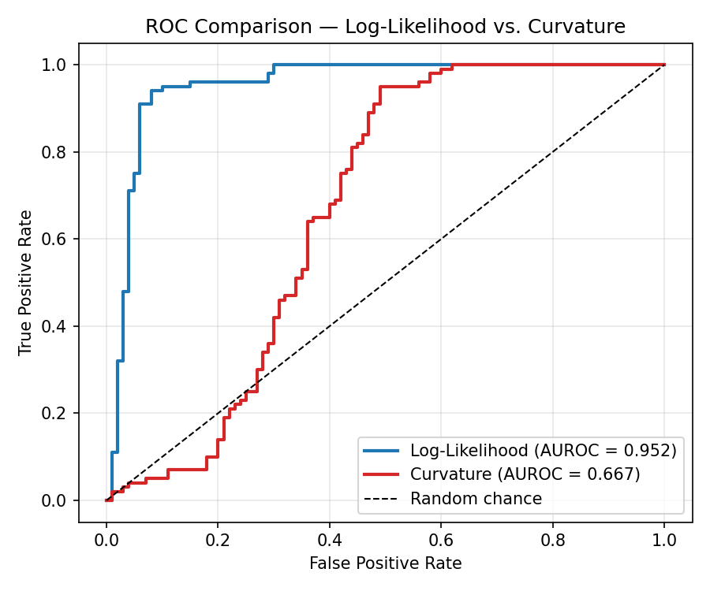
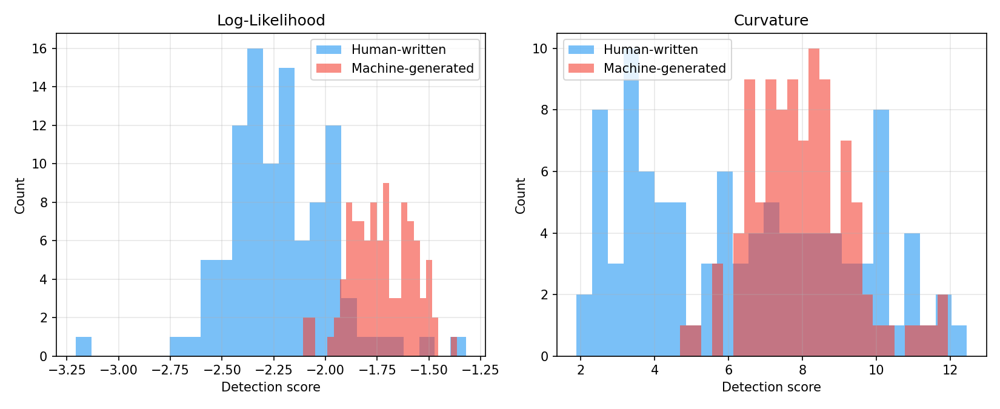
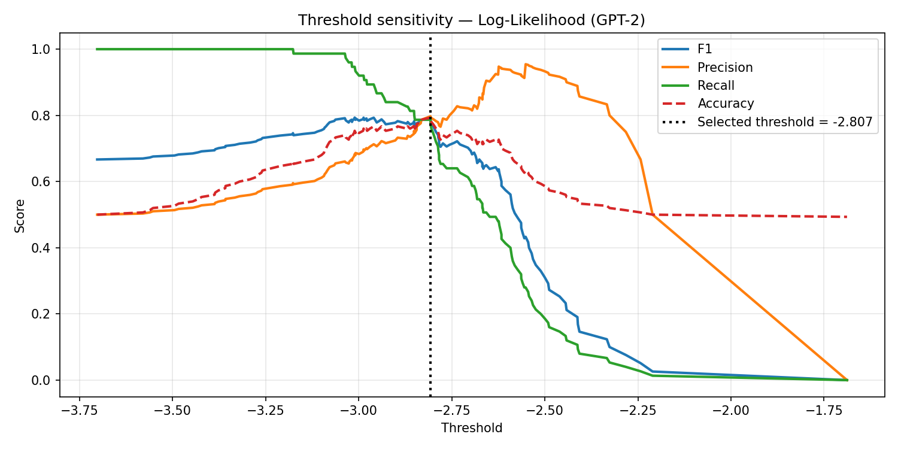
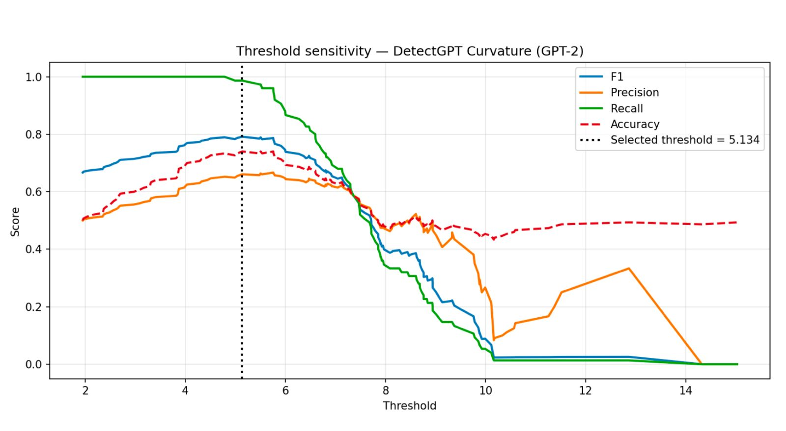

Overview
Large language models now produce news-style text that is hard to tell apart from human writing. This stream asks one focused question: how well do per-token log-likelihood and curvature-based (DetectGPT-style) scoring compare when detecting machine-generated text, under the same experimental conditions?
Both methods are zero-shot: neither is trained on labelled examples. Prior work evaluates them separately, on different datasets and models. Here they share the same dataset, the same generator and the same scoring backbone (Llama 3.2 3B), so any difference in performance can be attributed to the detection method itself.
Dataset
The human class is 250 BBC News articles from the XSum corpus, filtered to 100–600 words and sampled with a fixed seed. Each article's reference summary was used as a prompt for Gemma 3 4B, producing a topic-matched machine-generated article. Pairing by topic means the detectors have to pick up on writing style, not subject matter.
Each sample is a full news article with multiple paragraphs, not a short snippet. Human articles average roughly 294 words and the generated ones roughly 307, about 150,000 words of scored text in total.
datasets| Split | Human | Machine | Total |
|---|---|---|---|
| Train | 75 | 75 | 150 |
| Validation | 75 | 75 | 150 |
| Test | 100 | 100 | 200 |
| Total | 250 | 250 | 500 |
Methods
Detector 1: per-token log-likelihood
The scoring model reads the text and assigns each token a probability given the tokens before it. The score is the average log-probability. Machine text tends to score higher (less negative), because language models generate by choosing statistically likely tokens.
Detector 2: curvature (DetectGPT-style)
Curvature asks a different question. Instead of how probable the text is, it asks how much more probable the text is than slightly reworded versions of itself. For each text, 30 perturbations are generated by masking 15% of the words and refilling them with T5. Both the original and every perturbation are scored by the same Llama backbone.
Shared setup
Both detectors use Llama 3.2 3B as the scoring backbone. Each turns its continuous score into a decision with a single threshold, chosen by maximising Youden's J (sensitivity + specificity − 1) on the validation split only. The test split is never used to select a threshold. The thresholds were −2.0031 for log-likelihood and 5.1340 for curvature. Results are reported on the held-out test set of 200 articles.
The original proposal specified T5-large as the perturbation model. Our primary experiments used T5-base because of compute limits. When more compute became available, the full curvature run was repeated with T5-large, and both results are reported.
| Parameter | Log-likelihood | Curvature |
|---|---|---|
| Scoring model | Llama 3.2 3B | Llama 3.2 3B |
| Perturbation model | — | T5-base / T5-large |
| Perturbations (k) | — | 30 |
| Mask ratio | — | 0.15 |
| Minimum tokens | 10 | 10 |
| Threshold criterion | Youden's J | Youden's J |
| Threshold split | Validation | Validation |
| Bootstrap replicates | 1000 | 1000 |
Evaluation
AUROC is the main metric. It is the probability that a random machine text is ranked above a random human text, and it does not depend on any one threshold. Precision, recall, F1 and accuracy describe behaviour at the chosen threshold. 95% confidence intervals come from 1000 bootstrap resamples of the test set. McNemar's test and DeLong's test check whether the gap between the two detectors is statistically significant.
Results
| Detector | AUROC | F1 | Precision | Recall | Accuracy |
|---|---|---|---|---|---|
| Log-likelihood | 0.9524 | 0.8889 | 0.8276 | 0.9600 | 0.8800 |
| Curvature (T5-base) | 0.6668 | 0.7645 | 0.6226 | 0.9900 | 0.6950 |
| Curvature (T5-large) | 0.6937 | 0.7645 | 0.6226 | 0.9900 | 0.6950 |
| TF-IDF (shared, domain transfer) | 0.9719 | 0.8475 | 0.9740 | 0.7500 | 0.8650 |
| TF-IDF (self-trained, in-domain) | 0.9962 | 0.9588 | 0.9894 | 0.9300 | 0.9600 |


Statistical significance
| Detector | 95% bootstrap CI | McNemar p | DeLong p |
|---|---|---|---|
| Log-likelihood | [0.9135, 0.9831] | 5.74 × 10−6 | 3.19 × 10−6 |
| Curvature (T5-base) | [0.5896, 0.7482] |
The confidence intervals do not overlap, and both tests agree that the gap is not sampling noise.
Where the errors come from
| Detector | True pos. | True neg. | False pos. | False neg. |
|---|---|---|---|---|
| Log-likelihood | 96 | 80 | 20 | 4 |
| Curvature (T5-base and T5-large) | 99 | 40 | 60 | 1 |
| TF-IDF (self-trained) | 93 | 99 | 1 | 7 |
| TF-IDF (shared, domain transfer) | 75 | 98 | 2 | 25 |
At its calibrated threshold, log-likelihood produced 96 true positives, 80 true negatives, 20 false positives and 4 false negatives. Curvature produced 99, 40, 60 and 1. Curvature catches almost every machine text, but it also flags 60 of the 100 human articles as machine-generated.
Of the 63 articles where the two detectors disagreed, 49 were human texts that log-likelihood classified correctly and curvature did not. The examples inspected were attribution-heavy journalism with named sources, direct quotes and specific figures. Perturbing a quotation or a proper name rarely reproduces the original wording, which plausibly inflates curvature's discrepancy score for human text.
Discussion
Why did curvature underperform here?
The first candidate was the smaller T5-base perturbation model. Re-running the full pipeline with the originally proposed T5-large raised AUROC only from 0.6668 to 0.6937, with heavily overlapping confidence intervals. It cost about 5.4 hours of scoring instead of about 35 minutes. Perturbation model size is therefore not the main cause.
| Perturbation model | AUROC | 95% CI | Threshold | Scoring time |
|---|---|---|---|---|
| T5-base | 0.6668 | [0.5896, 0.7482] | 5.1340 | ≈ 35 min |
| T5-large | 0.6937 | [0.6156, 0.7737] | 4.4115 | ≈ 5.4 hrs |
A more likely explanation is a scorer–generator mismatch. Curvature's theory relies on machine text sitting at a sharp local peak of the generating model's probability landscape. In this setup Llama 3.2 3B scores text written by Gemma 3 4B. Log-likelihood only needs the scorer to rate machine text as more predictable on average, so it tolerates the mismatch much better.
Is the extra compute worth it?
Not in this setting. Curvature costs about 30× the compute per text for a weaker result. This is the same cost problem that motivated Fast-DetectGPT.
The threshold shapes the errors
Each detector's operating point sets which mistakes it makes. Curvature's recall of 0.99 against precision of 0.62 means it errs towards false accusations of human authors. For something like academic-integrity screening a higher threshold would be appropriate, at the cost of missing some machine text.


Secondary findings
A logistic-regression ensemble of both scores reached an AUROC of 0.9380 against 0.9401 for log-likelihood alone, so the two signals are not complementary here. The TF-IDF baselines score well because they are supervised. The shared model reached 0.9719 under domain transfer, and the self-trained model 0.9962 in-domain, which shows how much a trained classifier can exploit generator-specific vocabulary that zero-shot methods cannot see.
Limitations and Future Work
- Scope: one generator (Gemma 3 4B), one scoring backbone (Llama 3.2 3B), English BBC news only, and 500 articles in total. Results may not transfer to other generators, domains or scorers.
- Paraphrasing attack: an exploratory test caused a large drop in both detectors, but the paraphraser compressed documents into short summaries, which confounds the result. It is not reported as a robustness finding.
- Transparency note: an early curvature implementation omitted the standard-deviation normalisation (AUROC 0.6169). It was corrected before the final results.
Future work: test a scorer matched to the generator; run a length-preserving paraphrase attack; score articles in sub-article spans, since the detectors respond to local style rather than topic; and extend to more generators and domains.